Abrir e fechar o 3Mix
O 3Mix tem duas partes que sobem juntas: o motor de vídeo (a janela da mesa) e o painel de controle (as telas web, abertas no navegador ou dentro da própria mesa).
Abrir
- Abra pelo iniciador: 3Mix Studio.cmd na pasta do 3Mix (ou o atalho 3Mix Studio criado pelo instalador). No computador de desenvolvimento, INICIAR-3MIX.cmd.
- Espere a mesa aparecer. O iniciador só termina quando motor e painel respondem.
- Confira o selo Motor conectado no alto das telas. Se aparecer "Conectando…", o motor ainda está subindo.
Fechar e reiniciar
- DESLIGAR-3MIX.cmd fecha tudo e libera as portas. REINICIAR-3MIX.cmd fecha e abre de novo.
- Salve antes: botão Salvar projeto na barra superior da mesa.
- Não abra o executável do motor sozinho: a mesa fica sem o painel de controle.
- Ajustes de motor marcados como "vale ao reiniciar" só entram depois de fechar e abrir o 3Mix fora do ar.
Hub de Produção
Ponto de partida das telas de operação. Cada cartão abre um módulo e mostra o endereço dele; Copiar copia esse endereço para abrir em outro computador ou tablet.
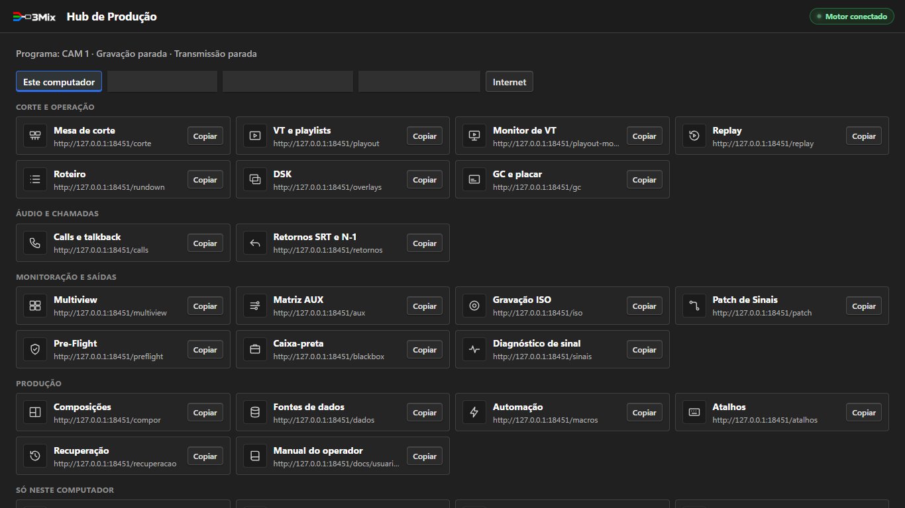
- Abra o Hub pelo endereço do 3Mix no navegador (na instalação padrão,
http://127.0.0.1:18188). - A primeira linha resume o estado: Programa, gravação e transmissão.
- Escolha Este computador para usar só aqui, ou uma rede para controlar de outro aparelho. Um aparelho novo pede o código de seis dígitos mostrado no Hub.
- Os módulos estão agrupados: Corte e operação, Áudio e chamadas, Monitoração e saídas, Produção. Em Só neste computador ficam Mixer de áudio, Color Studio, PTZ, Configurações, Transmissão, Saídas externas, Gravação, Efeitos e legendas e Novo projeto.
- Sem a rede ligada em Configurações › Remoto, o 3Mix só atende neste computador.
Mesa principal
A tela de trabalho: Preview e Programa no alto, transição e DSK no meio, entradas embaixo e o mixer ao lado.
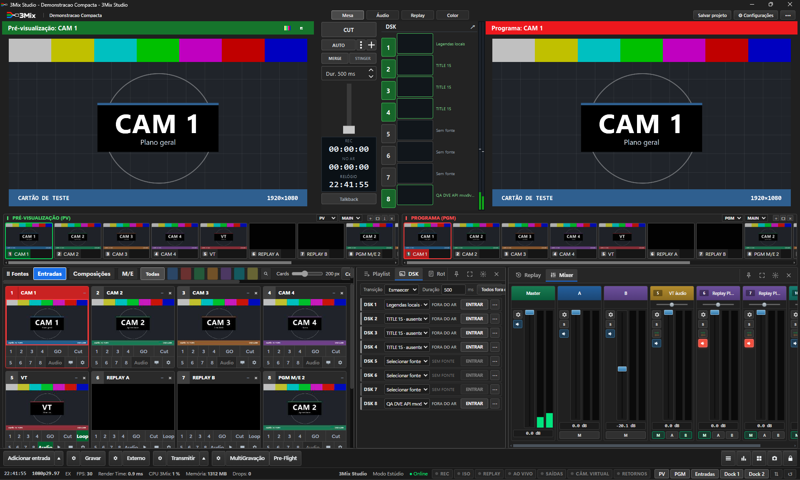
| Área | O que faz |
|---|---|
| Barra superior | Abas Mesa, Áudio, Replay, Color; estado do atraso e botão DUMP; Salvar projeto; Configurações; ••• com as demais ferramentas. |
| Pré-visualização (verde) | O que vai ao ar no próximo corte. Nada daqui sai sem você mandar. |
| Programa (vermelho) | O que está no ar agora. |
| Coluna central | CUT, AUTO, tipos de transição (Merge, Stinger…), Dur., T-Bar, relógios REC / NO AR / RELÓGIO e Talkback. |
| Coluna DSK | Os 8 canais de DSK, com a fonte de cada um. |
| Botoeiras PV e PGM | Uma linha de botões por entrada. Clique na PV para preparar e na PGM para cortar direto. Os seletores escolhem o lado (PV/PGM) e o M/E de cada botoeira. |
| Fontes | Abas Entradas, Composições e M/E; filtro por cor; tamanho dos cartões. |
| Dock lateral | Abas Playlist, Mixer, DSK, Roteiro, PTZ (e Replay). |
| Rodapé | Adicionar entrada, Gravar, Externo, Transmitir, MultiGravação (quando o motor tem gravação isolada) e Pre-Flight. O ⚙ ao lado de cada um abre o ajuste. À direita: menu de barramentos, estatísticas, atalhos, foto da saída e cadeado. |
| Faixa de estado | REC, ISO, REPLAY, AO VIVO, SAÍDAS, CÂM. VIRTUAL, RETORNOS acendem quando estão ativos. Os botões PV, PGM, Entradas, Dock 1 e Dock 2 mostram ou escondem partes da mesa. |
- O cadeado bloqueia botões perigosos, como Fechar e parar a gravação. Destrave para mexer neles.
- Fechar uma botoeira ou dock não apaga nada: reabra pela faixa do rodapé.
Entradas
No 3Mix tudo é uma entrada: câmera, VT, GC, call, replay, composição ou o Programa de outro M/E.
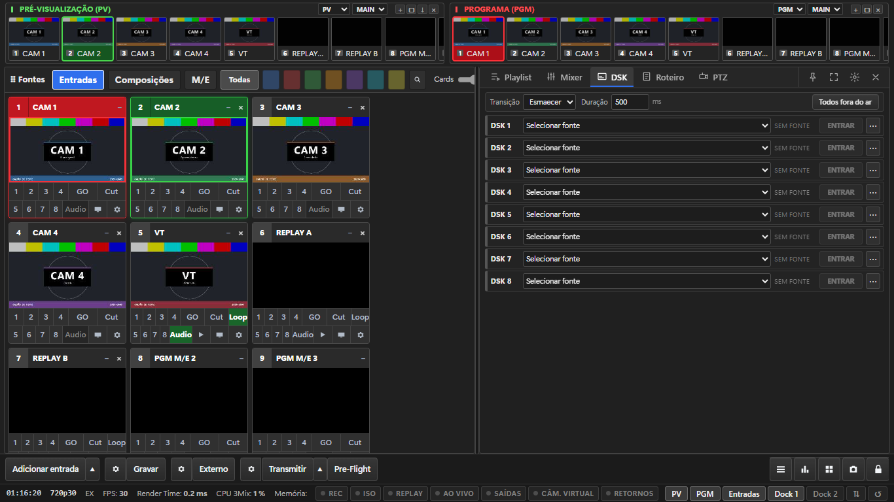
Adicionar
- Clique em Adicionar entrada no rodapé (a seta ao lado mostra os tipos mais usados).
- Escolha o tipo, dê um nome que você reconheça em dois segundos (
CAM 1,VT ABERTURA) e confirme.
O cartão da entrada
| Botão | O que faz |
|---|---|
| Imagem | Clique: manda para o Preview. Arraste até uma aba de cor para classificar. |
| 1 a 8 | DSK 1 a 8. Primeiro clique prepara o DSK com esta entrada (não vai ao ar); segundo clique entra; com ela no ar, um clique tira. |
| GO | Leva ao ar com a transição atual. |
| Cut | Corte seco para o Programa. |
| Loop, ▶ | Só em entradas de vídeo ou áudio: repetir e tocar/pausar. |
| Audio | Liga/desliga o áudio da entrada em todos os barramentos. |
| Monitor | Abre a entrada em janela. |
| ⚙ (ou clique direito) | Configurações da entrada: fonte, camadas, atraso de áudio e vídeo, cor. |
| − / × | Recolhe o cartão (a entrada continua no motor) / exclui a entrada do projeto. |
- Uma entrada no ar não pode ser excluída: tire do Programa antes.
- Selo de alerta no cartão indica entrada sem sinal ou com sinal parado.
CUT, AUTO e T-Bar
- Prepare a entrada no Preview (clique no cartão ou na botoeira PV).
- Confira enquadramento, cor e áudio.
- CUT: troca seca. AUTO: troca com a transição escolhida, no tempo de Dur. (em ms).
- Para fazer na mão, arraste a T-Bar até o fim.
Os botões de tipo (Merge, Stinger e os que você adicionar com +) definem o que o AUTO usa. Os relógios mostram tempo de gravação, tempo no ar e a hora; dois cliques neles escolhem o que cada um mostra.
- Corte é irreversível no ar. Se precisar cortar o que já saiu na transmissão, só o DUMP ajuda, e só com atraso ligado.
DSK
Camadas por cima do Programa: tarja, logo, placar, legenda. São 8 canais.
Na mesa
- Aba DSK do dock: escolha a fonte de cada DSK em Selecionar fonte.
- Escolha Transição e Duração.
- ENTRAR põe o DSK no ar; clique de novo para tirar. Todos fora do ar limpa tudo.
- O ⋯ de cada linha abre as ações daquele DSK.
Janela DSK
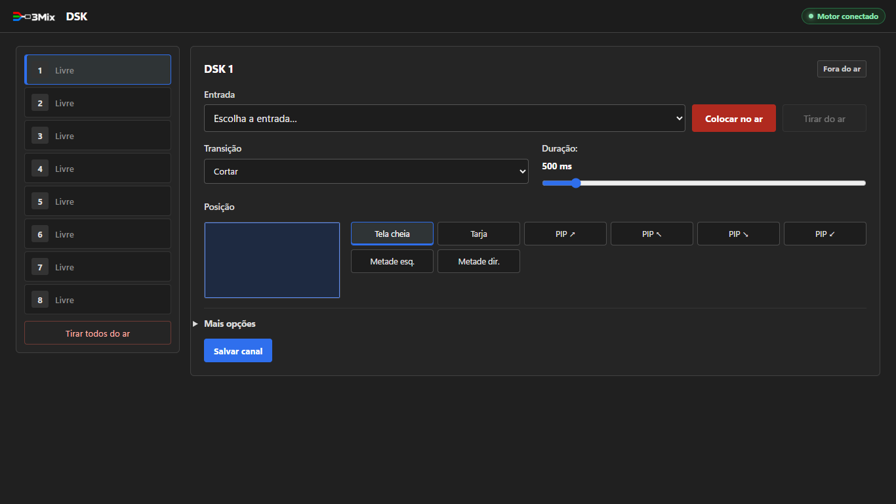
- Escolha o canal à esquerda (1 a 8).
- Escolha a Entrada e a Posição: Tela cheia, Tarja, PIP nos quatro cantos, Metade esquerda ou direita.
- Salvar canal guarda o ajuste. Colocar no ar e Tirar do ar operam o canal. Tirar todos do ar limpa os 8.
- Retornos em Clean Feed saem sem os DSK.
Mesa de corte remota
Versão enxuta da mesa para outro computador ou tablet: Preview, Programa, CUT, AUTO, T-Bar, DUMP e Pre-Flight.
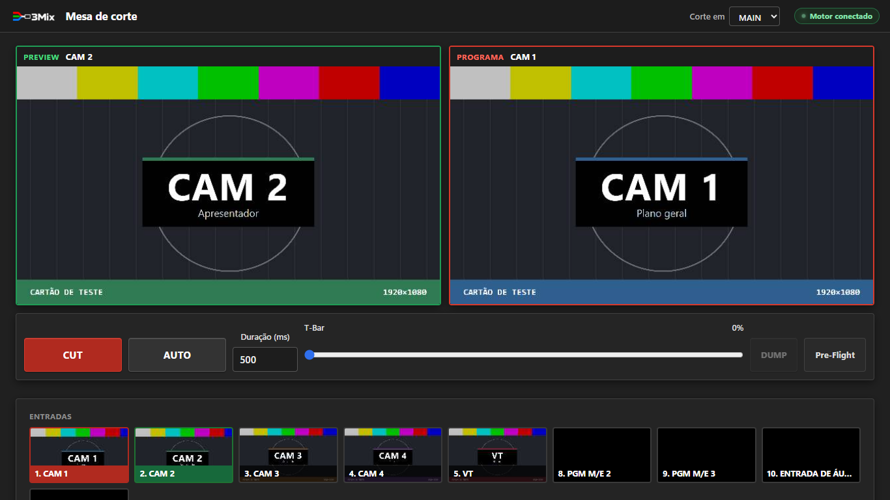
- Toque numa entrada da lista Entradas para mandar ao Preview.
- CUT ou AUTO (com a Duração em ms), ou arraste a T-Bar.
- Corte em escolhe qual M/E esta tela controla (MAIN, M/E 2…).
- As imagens desta tela são prévias leves, não monitoração de qualidade.
- DUMP aparece apagado enquanto não houver transmissão com atraso.
M/E 2, 3 e 4
Mesas de corte extras, cada uma com Preview, Programa, formato e transição próprios. Servem para um telão, um vertical para redes sociais ou um retorno diferente do Programa.
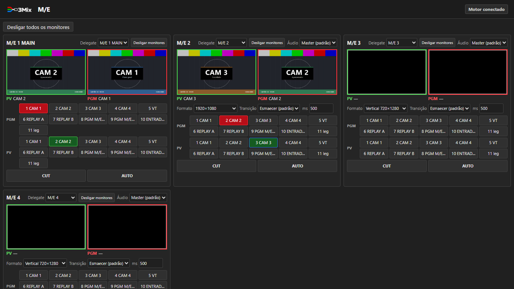
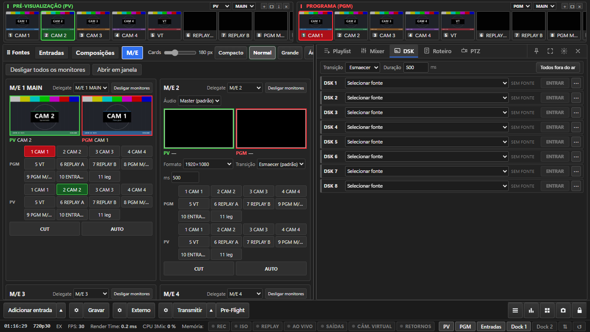
- Abra a aba M/E nas Fontes da mesa ou a janela M/E.
- Escolha Formato (1920×1080, Vertical 720×1280…), Transição e tempo em ms.
- Use a linha PV para preparar e CUT/AUTO para levar ao PGM daquele M/E. A linha PGM corta direto.
- Áudio escolhe o que o M/E leva de som (padrão: Master).
- O Programa de cada M/E vira a entrada PGM M/E 2, PGM M/E 3…, usável em outras composições, saídas e Multiview.
- Desligar monitores: sem monitores, aquele M/E não pede imagem ao motor nesta tela. Ligar monitores volta.
- Cada M/E ligado consome processamento. Confira o Pre-Flight antes de usar vários.
- Saídas por M/E (transmissão extra, gravação, NDI, SRT) são escolhidas na própria saída.
Áudio
Mixer completo: canais de entrada, saídas Master, Bus A, Bus B e fones, e o inspetor do canal com efeitos.
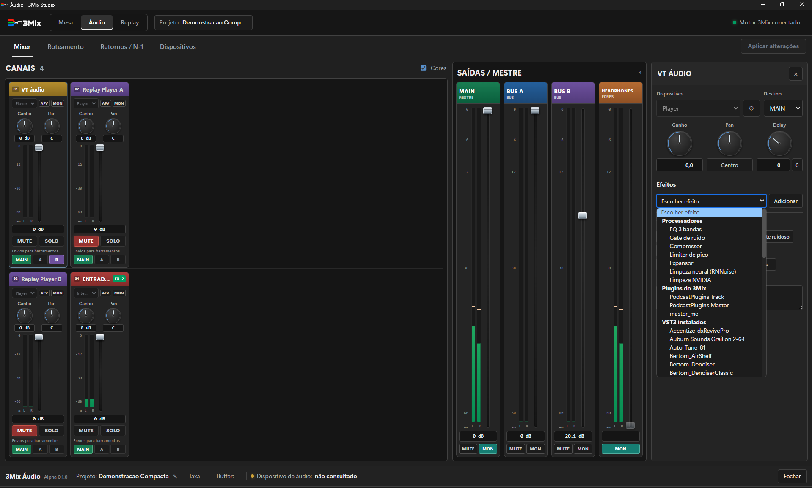
Mixar
- Abra pela aba Áudio da barra superior. Abas: Mixer, Roteamento, Retornos / N-1, Dispositivos.
- Em cada canal: Ganho, Pan, fader, MUTE, SOLO. AFV: o áudio acompanha o vídeo (abre quando a entrada vai ao ar). MON: manda o canal para os fones.
- Envios para barramentos: MAIN (vai ao ar), A, B.
- Saídas: MAIN é o Master do ar; BUS A e BUS B são misturas auxiliares; HEADPHONES é o que você ouve nos fones (MON).
- Mudou o roteamento? Clique em Aplicar alterações.
Efeitos e plugins
- Clique no nome do canal para abrir o inspetor: Dispositivo, Destino, Ganho, Pan, Delay.
- Em Efeitos, escolha e clique Adicionar: EQ 3 bandas, Gate de ruído, Compressor, Limiter de pico, Expansor, Limpeza neural (RNNoise), Limpeza NVIDIA, os plugins do 3Mix (PodcastPlugins, master_me) e os VST3 instalados no computador.
- O selo FX no canal mostra quantos efeitos estão ativos.
Roteamento
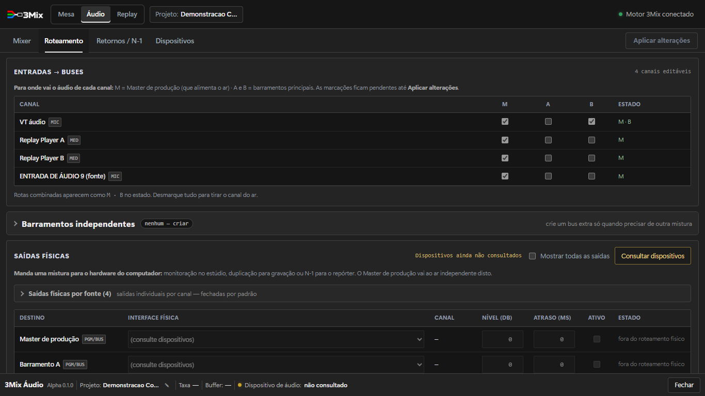
Marque M, A ou B por canal. Em Saídas físicas, Consultar dispositivos lista as placas de som para mandar Master, A ou B a um hardware (monitor de estúdio, N-1 para repórter).
- Criar ou remover Master e barramentos A/B (menu ☰ do rodapé da mesa) muda o caminho do áudio: faça fora do ar. Com barramentos, o áudio passa pelo Master com cerca de 21 ms de atraso.
- VST3 só de 64 bits. ASIO com placa física ainda não foi testado nesta Alpha.
Replay
Dois players (A e B) com câmera lenta, histórico multicâmera em QuadView e lista de lances salvos.
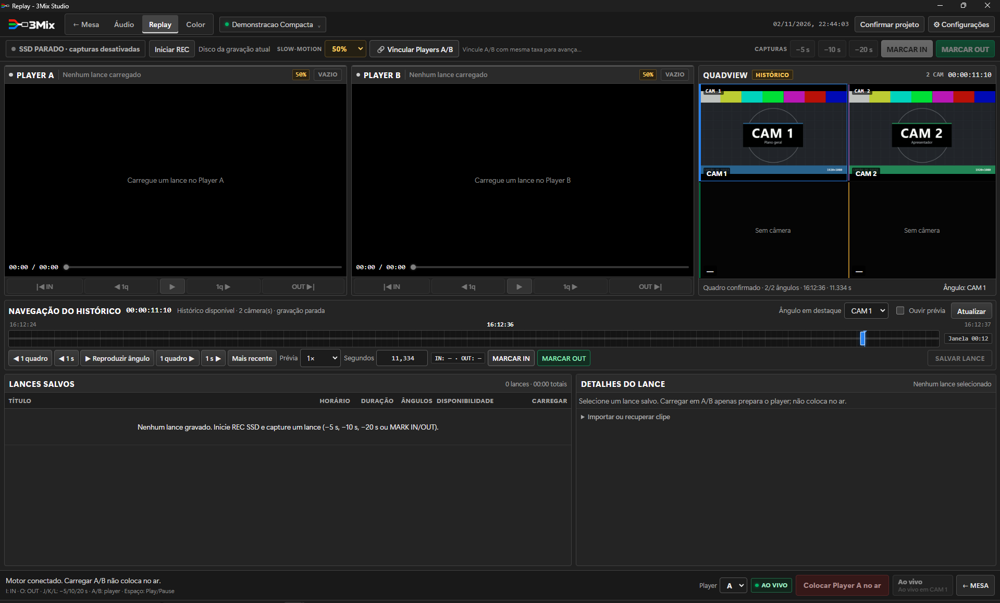
- Clique Iniciar REC para o 3Mix começar a guardar o histórico das câmeras.
- Num lance: −5 s, −10 s, −20 s salvam o trecho que acabou de acontecer; ou marque MARCAR IN e MARCAR OUT.
- Na Navegação do histórico, ande por quadro ou por segundo, escolha o Ângulo em destaque e SALVAR LANCE.
- Em Lances salvos, carregue o lance no Player A ou B. Ajuste a velocidade (SLOW-MOTION, ex.: 50%).
- Colocar Player A no ar (ou B) leva o replay ao Programa.
Teclas: I IN, O OUT, J/K/L −5/−10/−20 s, A/B escolhe o player, Espaço tocar/pausar.
- Carregar em A/B só prepara o player; não coloca no ar.
- Sem REC ligado não há histórico para voltar.
Color Studio
Análise e correção de cor por entrada, com scopes e comparação entre câmeras.
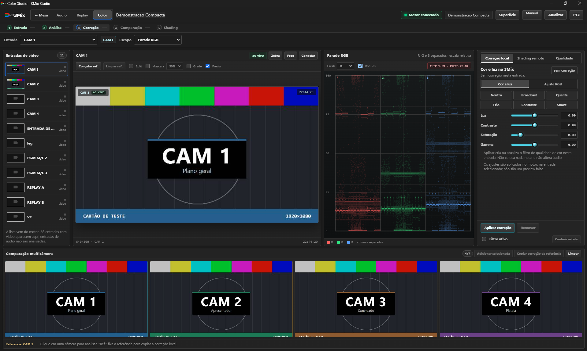
- Escolha a Entrada na lista à esquerda (só entradas com vídeo aparecem).
- Escolha o Escopo (ex.: Parade RGB). Use Zebra, Foco, Grade e Congelar para conferir.
- Em Correção local, parta de um preset (Neutro, Broadcast, Quente, Frio, Contraste, Suave) e ajuste Luz, Contraste, Saturação e Gamma.
- Aplicar correção grava o ajuste naquela entrada. Remover desfaz.
- Em Comparação multicâmera, marque uma câmera como referência e use Copiar correção da referência.
- Aplicar não coloca a entrada no ar, mas muda a imagem dela onde ela aparecer, inclusive no Programa. Prefira corrigir com a câmera fora do ar.
- Shading remoto depende de câmera compatível; não foi testado com câmera física nesta Alpha.
GC e placar
Biblioteca de títulos prontos (manchete, nome e cargo, créditos, contagem, placar e relógio…) em horizontal e vertical.
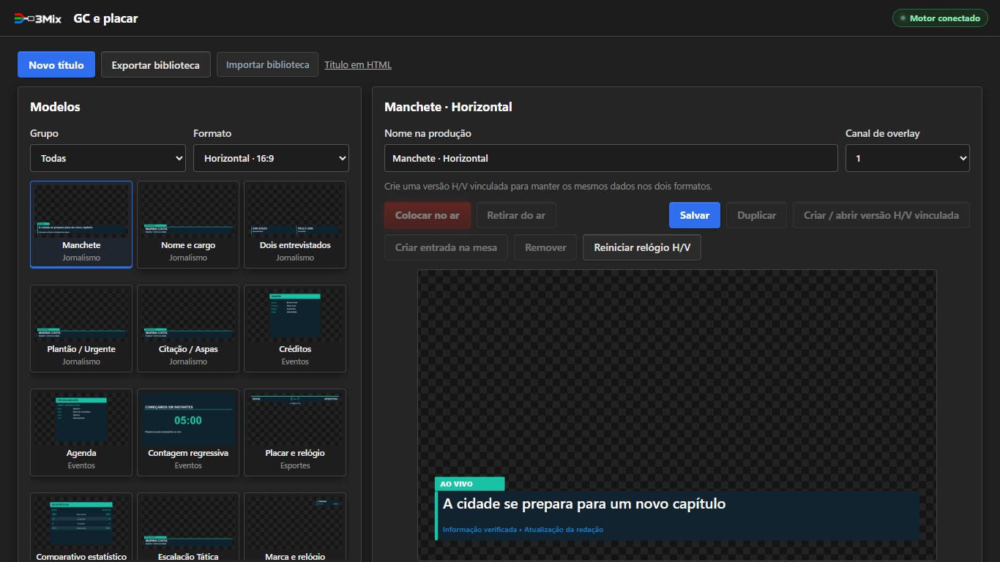
- Escolha Grupo e Formato e clique num modelo, ou Novo título.
- Edite o texto na prévia e dê um Nome na produção.
- Escolha o Canal de overlay (DSK) e clique Salvar.
- Colocar no ar / Retirar do ar operam o título. Criar entrada na mesa transforma o título numa entrada.
- Criar / abrir versão H/V vinculada mantém os mesmos dados no horizontal e no vertical.
- Exportar biblioteca / Importar biblioteca levam seus títulos para outro computador.
VT, Roteiro, Multiview e Caixa-preta
VT e playlists
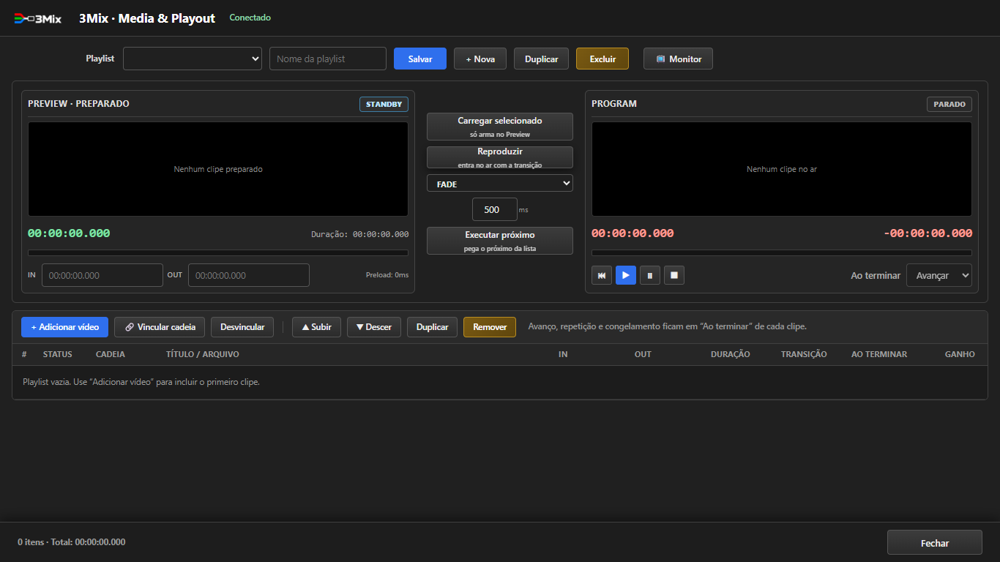
+ Adicionar vídeo monta a lista. Carregar selecionado só arma no Preview; Reproduzir entra no ar com a transição; Executar próximo pega o próximo da lista. Cada clipe tem IN, OUT, transição, "Ao terminar" e Ganho próprio, sem mexer no fader do Master. Monitor abre o monitor de VT.
Roteiro
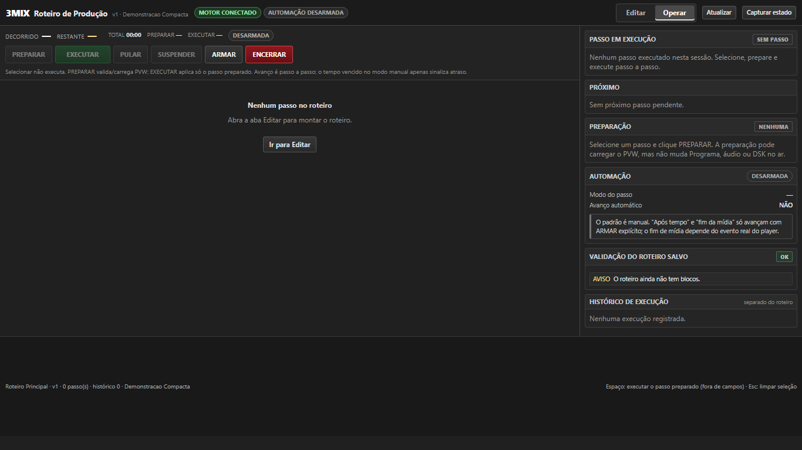
Monte os passos em Editar. Em Operar: PREPARAR carrega o passo no Preview, EXECUTAR aplica só o passo preparado. Avanço automático só depois de ARMAR. Espaço executa o passo preparado.
Multiview
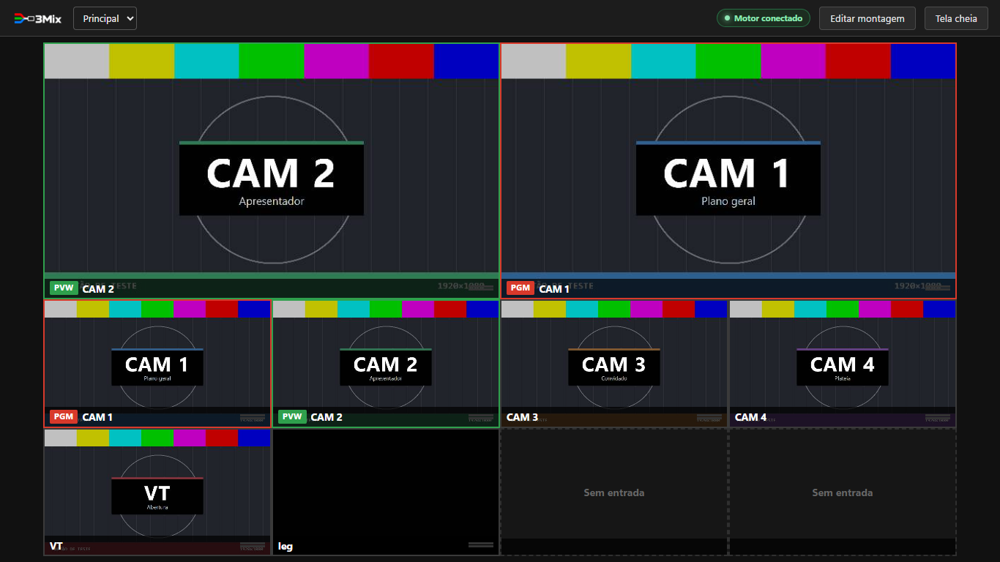
Escolha a montagem no seletor, Tela cheia para o monitor. A montagem (o que vai em cada quadro, monitor vertical, relógio) se edita em Editar montagem ou Configurações › Multiview.
Caixa-preta
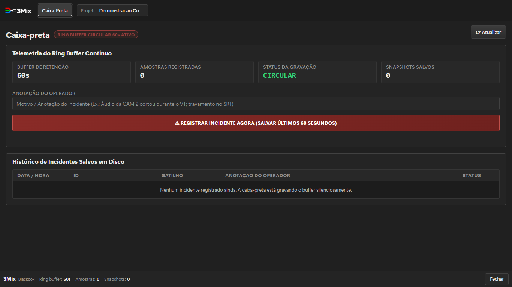
Guarda continuamente os últimos 60 s. Quando algo der errado, escreva o motivo e clique REGISTRAR INCIDENTE AGORA; o trecho vai para o histórico, útil para o suporte.
Gravação
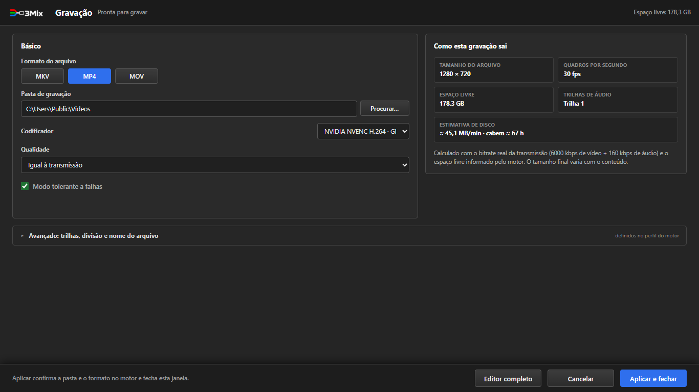
- Clique no ⚙ ao lado de Gravar no rodapé da mesa.
- Escolha o formato (MKV, MP4, MOV), a Pasta de gravação, o Codificador e a Qualidade.
- Confira à direita o tamanho, o espaço livre e quantas horas cabem.
- Aplicar e fechar. Depois, Gravar no rodapé inicia e para.
Modo tolerante a falhas grava de um jeito que o arquivo sobrevive a uma queda. Para gravar cada câmera em arquivo separado, use MultiGravação / Gravação ISO.
- A gravação não passa pelo atraso do DUMP: grava tudo, inclusive o que foi descartado no ar.
- Faça uma gravação curta de teste e abra o arquivo antes de um evento.
Transmissão e MultiStream
Transmissão principal
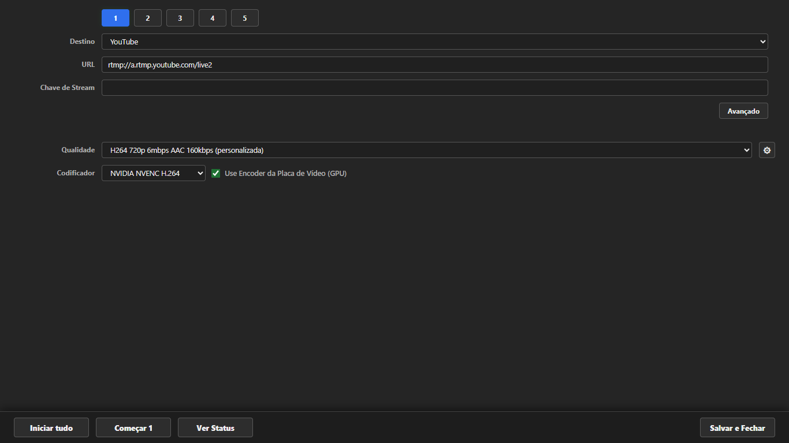
- Clique no ⚙ ao lado de Transmitir.
- Escolha o Destino (YouTube, servidor RTMP personalizado…), confira a URL e cole a Chave de Stream. Chave já salva: deixe em branco para manter.
- Escolha Qualidade e Codificador. Marque o encoder da placa de vídeo quando houver.
- Salvar e Fechar. Rode o Pre-Flight e use Transmitir no rodapé para entrar no ar.
MultiStream (destinos adicionais)
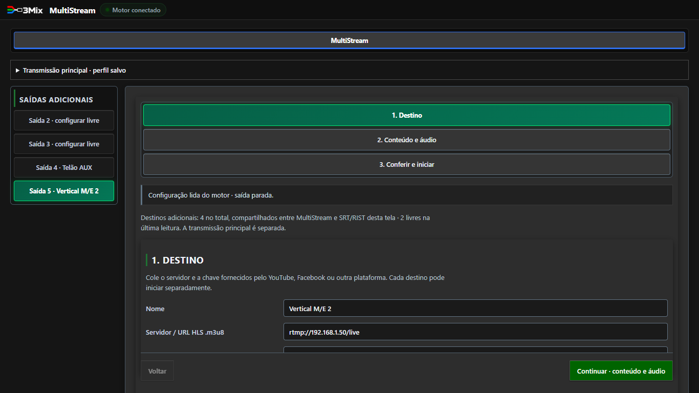
- Escolha uma saída livre à esquerda (Saída 2 a 5).
- 1. Destino: nome, servidor e chave. 2. Conteúdo e áudio: Programa, um M/E ou uma entrada; formato. 3. Conferir e iniciar.
- Cada destino inicia e para separado.
- São 4 destinos adicionais no total, divididos entre MultiStream e SRT/RIST.
- Destinos adicionais não passam pelo atraso do DUMP.
Saídas externas (NDI, OMT, SRT)
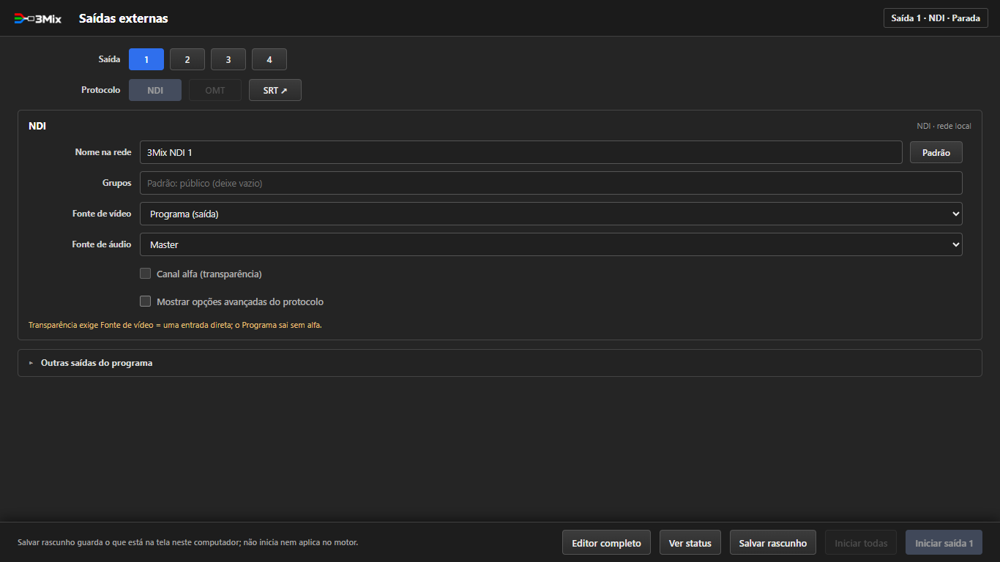
- Clique em Externo no rodapé.
- Escolha a Saída (1 a 4) e o Protocolo (NDI, OMT; SRT ↗ abre o assistente SRT).
- Dê o Nome na rede e escolha Fonte de vídeo e Fonte de áudio.
- Iniciar saída. Salvar rascunho só guarda na tela, não inicia.
- Transparência só com Fonte de vídeo = uma entrada direta; o Programa sai sem alfa.
- DeckLink e SDI ainda sem teste com placa física. NDI, SRT e DeckLink não passam pelo atraso do DUMP.
Atraso e DUMP
A transmissão principal sai alguns segundos atrasada. Se algo indevido acontecer, o DUMP descarta esse trecho antes de ele chegar ao público. Novo na Alpha 0.1.1.
Ligar
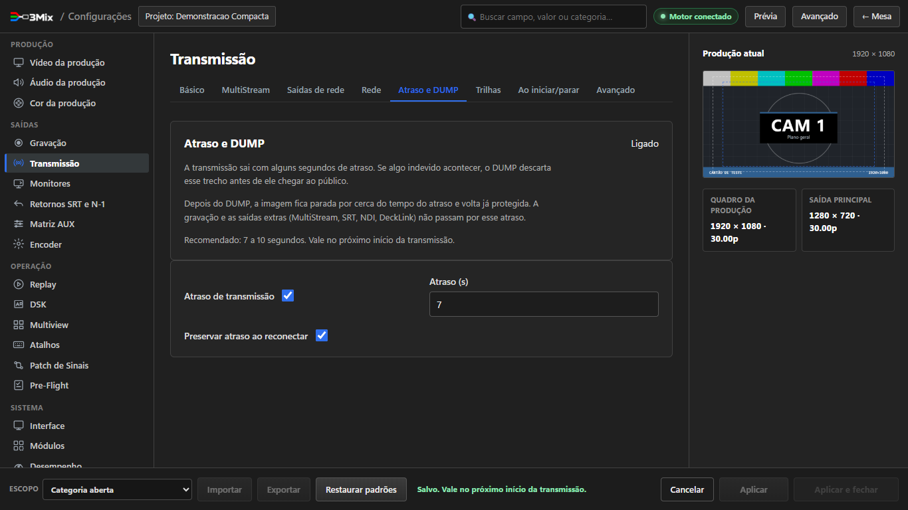
- Abra Configurações › Transmissão › Atraso e DUMP (ou clique no DUMP da barra com o atraso desligado).
- Marque Atraso de transmissão e escolha os segundos. Recomendado: 7 a 10 s.
- Deixe Preservar atraso ao reconectar marcado.
- Aplicar. Aparece "Salvo. Vale no próximo início da transmissão."
- Pare e inicie a transmissão de novo para valer.
Ler a barra da mesa
| Barra | Significa |
|---|---|
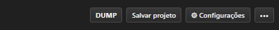 | Só DUMP, sem texto: atraso desligado. Clicar abre a configuração. |
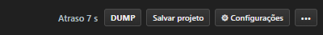 | Atraso 7 s em cinza: ligado, fora do ar. O DUMP vale quando a transmissão começar. |
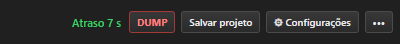 | Atraso 7 s em verde e DUMP com borda vermelha: no ar e protegido. |
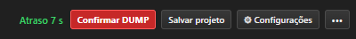 | Confirmar DUMP: primeiro clique dado. Tem 3 s para confirmar; sem o segundo clique, nada é descartado. |
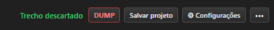 | Trecho descartado: o motor confirmou o descarte. |
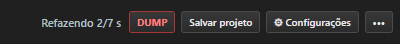 | Refazendo 2/7 s: o atraso está se recompondo. Dá para dar outro DUMP. |
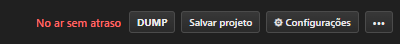 | No ar sem atraso: a transmissão começou com o atraso desligado. O DUMP não funciona nela. |
Dar o DUMP
- Clique em DUMP. O botão vira Confirmar DUMP.
- Clique de novo em até 3 s.
- No destino, a imagem fica parada por cerca do tempo do atraso e volta já protegida.
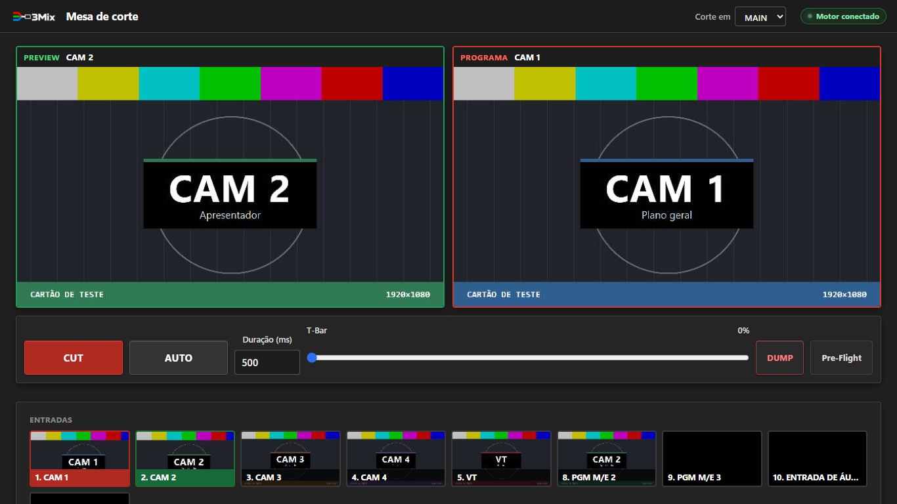
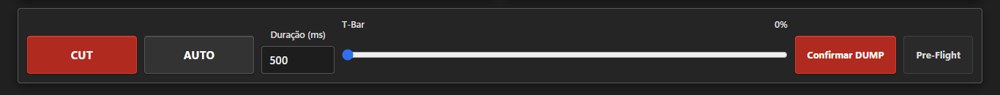
- Cobre só a transmissão principal. Gravação e saídas extras (MultiStream, SRT, NDI, DeckLink) não passam pelo atraso; o que foi descartado no ar continua nelas.
- Depois do DUMP, o público vê a imagem parada por cerca do tempo do atraso.
- Mudar o atraso só vale ao reiniciar a transmissão.
- Com o atraso ligado, o keyframe da transmissão fica em 2 s quando estava automático.
- O DUMP só confirma quando o motor descartou de fato. Se falhar, a barra mostra "DUMP falhou".
- Configurações › Módulos pode esconder o DUMP; nesse caso o botão some da barra.
Calls e retornos
Calls (convidados pela internet)
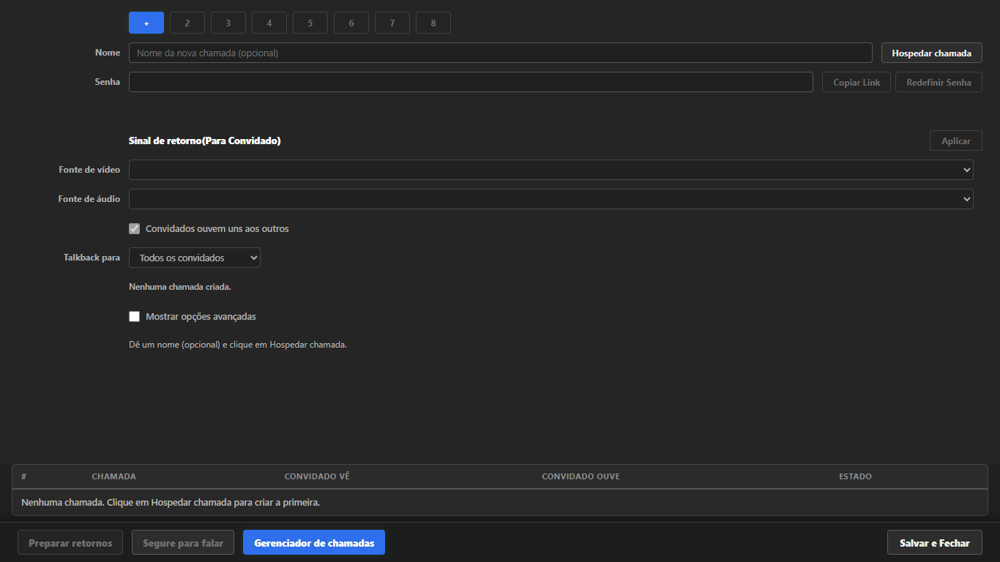
- Na mesa, Adicionar entrada › Call, ou abra Calls pelo Hub.
- Dê um nome e clique Hospedar chamada. Copiar Link e mande ao convidado com a senha.
- Em Sinal de retorno (Para Convidado), escolha o que ele vê (Fonte de vídeo) e ouve (Fonte de áudio). Convidados ouvem uns aos outros controla se um ouve o outro.
- Preparar retornos e confirme com a pessoa o que chega.
- Talkback: escolha em Talkback para e segure Segure para falar.
Retornos SRT e N-1
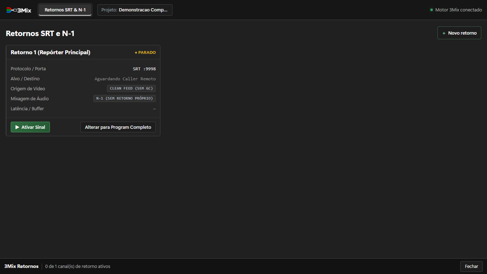
- + Novo retorno cria um canal SRT para o repórter de externa.
- Por padrão ele vai em Clean Feed (sem GC) com áudio N-1 (o programa sem a voz do próprio repórter).
- Ativar Sinal liga. Alterar para Program Completo manda o programa com GC.
- Calls com convidados reais pela internet ainda não foram comprovadas nesta Alpha.
- Retorno "pronto" pode estar aguardando a conexão do outro lado: confirme com quem recebe.
Pre-Flight
Confere a produção e o computador antes de entrar no ar. Rode sempre antes de transmitir ou gravar.
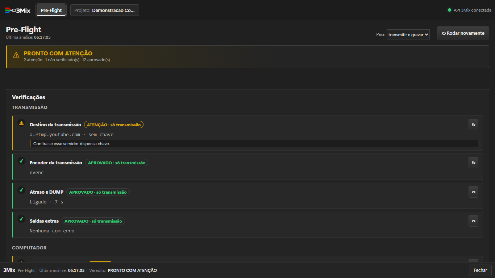
- Abra pelo botão Pre-Flight do rodapé (ou pela mesa de corte).
- Em Para, escolha transmitir e gravar, só transmitir ou só gravar. Itens que não importam para a escolha não pesam no veredito.
- Leia o veredito: PRONTO PARA ENTRAR NO AR, PRONTO COM ATENÇÃO ou BLOQUEIO.
- Cada item mostra o nível: APROVADO, ATENÇÃO, BLOQUEIO ou NÃO VERIFICADO, com o que fazer.
- Corrigiu um item? Clique no ↻ dele para conferir só aquele. ↻ Rodar novamente confere tudo.
Programas concorrentes
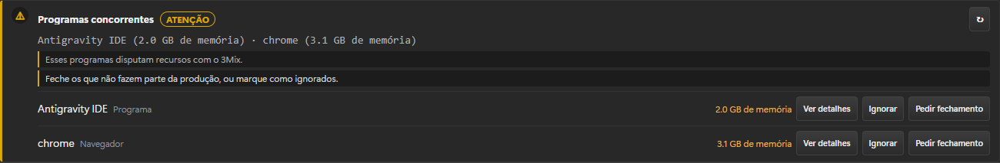
- Ver detalhes: mostra o que o programa está usando.
- Ignorar: o programa não é mais apontado.
- Pedir fechamento: dois cliques (o primeiro vira Confirmar). Pede ao programa que feche a janela normalmente; nunca força. Se ele perguntar algo (salvar arquivo, por exemplo), responda nele.
Programas do sistema e o próprio 3Mix nunca aparecem nessa lista.
Liberar com bloqueio
Se houver bloqueio e você precisar entrar assim mesmo, escreva o motivo e clique Registrar e liberar. O motivo fica guardado no histórico.
- No ar, o Pre-Flight faz uma verificação leve, sem testes que mexam no disco.
- "NÃO VERIFICADO" não é aprovação: indica algo que o 3Mix não conseguiu medir (ex.: capacidade da máquina ainda não medida).
Configurações
Onde se configura, não onde se opera. Categorias à esquerda, campos no centro e a produção atual à direita.
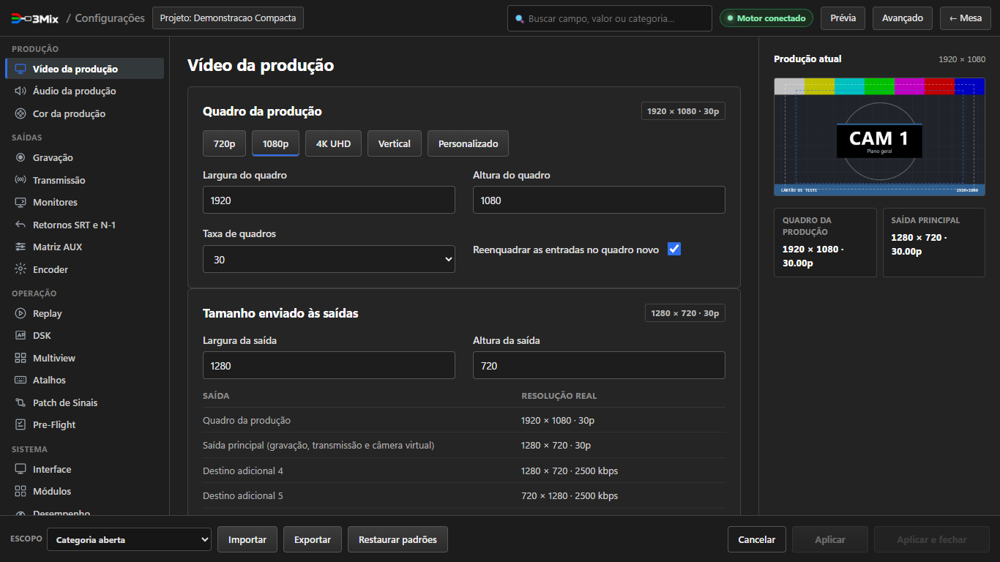
| Grupo | Categorias |
|---|---|
| Produção | Vídeo da produção, Áudio da produção, Cor da produção |
| Saídas | Gravação, Transmissão (Básico, MultiStream, Saídas de rede, Rede, Atraso e DUMP, Trilhas, Ao iniciar/parar, Avançado), Monitores, Retornos SRT e N-1, Matriz AUX, Encoder |
| Operação | Replay, DSK, Multiview, Atalhos, Patch de Sinais, Pre-Flight |
| Sistema | Interface, Módulos, Desempenho, Remoto, Rede Multipath, Automação, Recuperação |
| Sobre | Sobre e suporte (versão, atualizações, relatar problema) |
- Use a busca do alto para achar um campo por nome ou valor.
- Mude o que precisar. Escopo define se Aplicar vale para a categoria aberta, o rascunho ou todas.
- Aplicar salva e confirma no motor; Aplicar e fechar volta à mesa; Cancelar descarta.
- Exportar / Importar levam a configuração para outro computador. Restaurar padrões volta ao de fábrica.
- Algumas preferências do motor só valem depois de reiniciar o 3Mix fora do ar; a mensagem ao aplicar avisa quando for o caso.
Atalhos e automação
Teclas padrão da mesa
| Tecla | Faz |
|---|---|
| Espaço | CUT |
| Enter | Fade (500 ms) |
| F1 a F6 | Entrada 1 a 6 no Preview |
| 1 a 4 | Liga/desliga DSK 1 a 4 |
| M | Liga/desliga o áudio do Master |
| P | Tocar/pausar a mídia |
| B | Fade to Black |
O botão de atalhos no canto direito do rodapé da mesa mostra a lista, deixa adicionar teclas ou controles MIDI e restaurar o padrão.
Atalhos da produção, MIDI e OSC
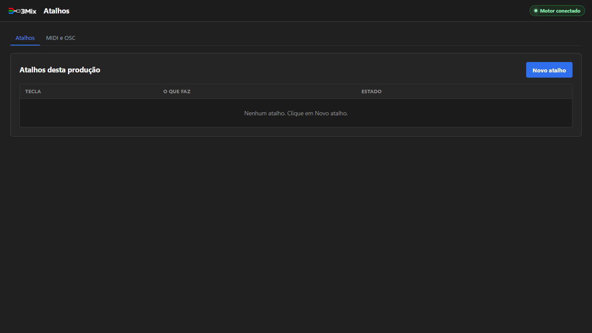
Novo atalho liga uma tecla a uma ação. A aba MIDI e OSC faz o mesmo para controladores.
Automação (macros)
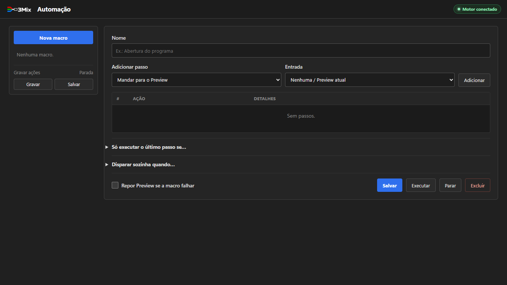
- Nova macro, dê um nome.
- Em Adicionar passo, escolha a ação e a entrada e clique Adicionar. Ou use Gravar para gravar o que você faz na mesa.
- Opcional: "Só executar o último passo se…" e "Disparar sozinha quando…".
- Salvar; Executar para rodar, Parar para interromper.
Problemas comuns
| Sintoma | O que fazer |
|---|---|
| Tela com "Conectando…" ou "Motor desconectado" | Espere alguns segundos; o painel reconecta sozinho. Persistindo, recarregue (F5). Se o motor caiu, abra de novo pelo iniciador; projeto e entradas continuam salvos. |
| Não abre: porta em uso | Use DESLIGAR-3MIX.cmd e abra de novo. Outro programa pode estar usando a porta. |
| Entrada preta ou com alerta | Confira o cabo/dispositivo e o ⚙ da entrada. O Pre-Flight lista entradas sem imagem. |
| Sem som no ar | Confira MUTE do canal e do Master, o envio MAIN do canal e o AFV. O Pre-Flight mostra o pico do Master. |
| DUMP apagado no ar | A transmissão começou sem atraso ("No ar sem atraso"). Ligue o atraso e reinicie a transmissão fora de um momento crítico. |
| Transmissão não inicia | Rode o Pre-Flight "só transmitir": destino, chave e encoder aparecem lá. |
| Computador lento | Pre-Flight › Programas concorrentes; desligue monitores de M/E que não usa. |
Relatar um problema
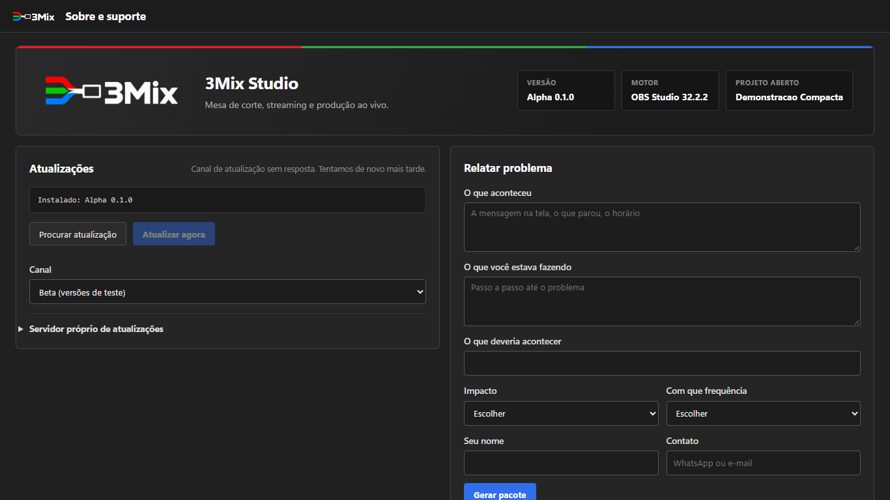
- Abra Configurações › Sobre e suporte (ou ••• › Relatar problema).
- Escreva o que aconteceu, o que você fazia e o que deveria acontecer.
- Gerar pacote e envie o ZIP ao suporte. Se o 3Mix nem abre, use COLETAR-LOGS.cmd.
Se for no meio do evento, antes registre o incidente na Caixa-preta.
Sobre este manual
Manual do Operador da Alpha 0.1 do 3Mix (Atraso e DUMP a partir da 0.1.1). As imagens são telas reais: a mesa principal, o Áudio, o Replay e o Color vêm da instalação em uso; as demais, de uma bancada com o projeto Demonstração Compacta. Endereços de rede da máquina aparecem cobertos.
O que ainda não foi comprovado nesta Alpha (Windows limpo, placas SDI/DeckLink, ASIO físico, calls pela internet, horas seguidas no ar) está em docs/LIMITES-CONHECIDOS.md. Detalhes técnicos estão no Manual técnico.